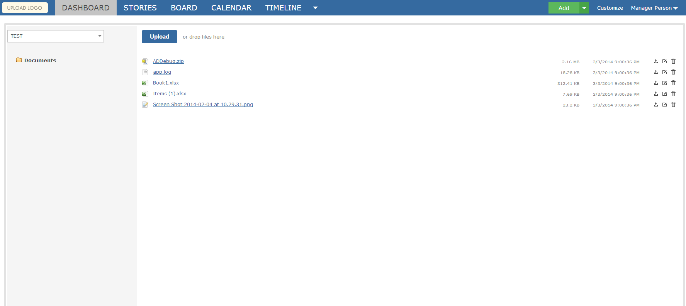
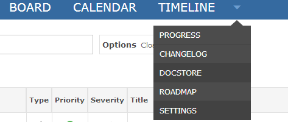

The DocStore app allows you to manage and organize not only documents, but all file types that you wish to upload into Gemini. The DocStore is personalized for specific workspaces, allowing for privacy and organization from workspace to workspace. Within the DocStore, you may add, edit, and remove folders to fit your organizational needs.

You will want to first ensure that the DocStore app is associated to the correct projects desired. Please navigate to Customize > Apps > DocStore. From here, select the projects you wish to enable the DocStore app for. From this screen, you may also modify which user groups can view, and edit, within the DocStore app - this gives you complete control over the app. Once you have made the desired changes, simply click "Save" and navigate back to the item grid.
From here, enabling the DocStore app for a workspace is very simple. Simply select the workspace that you wish to enable the DocStore app for, select the "Configure" button (bottom-right). Under the Workspace tab, please ensure that "DocStore" is selected and enabled.

From the dropdown menu, the new "Docstore" option will be present, allowing you to access and view your documents.
